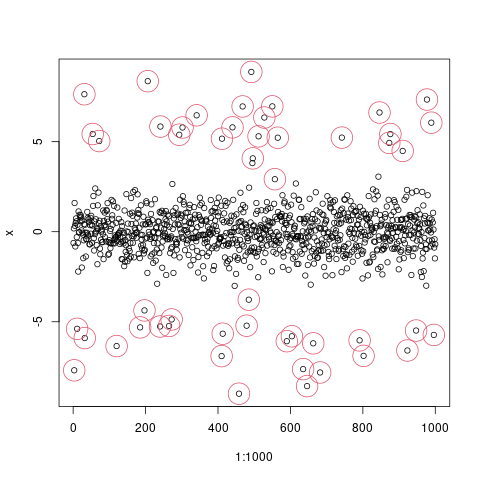
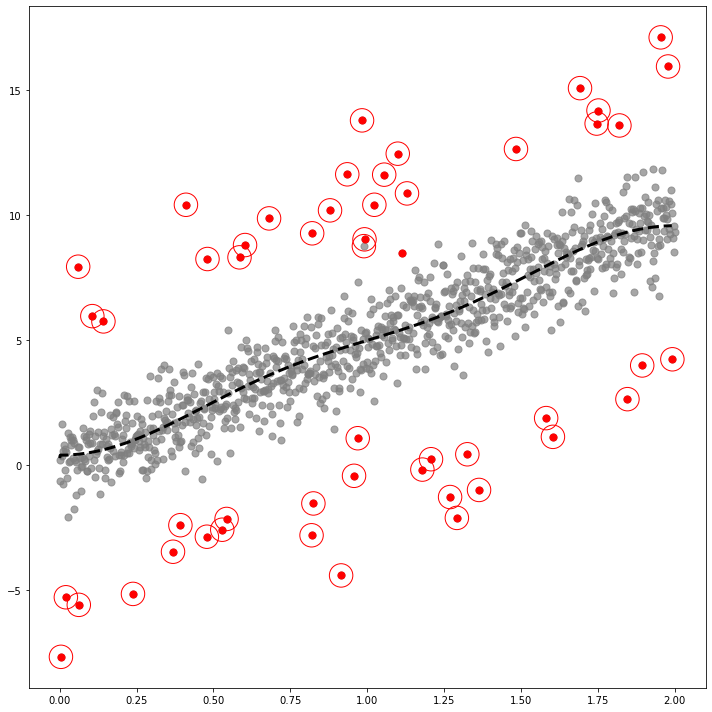

import tqdm
import numpy as np
import pandas as pd
import matplotlib.pyplot as plt
import plotly.express as px
import warnings
warnings.simplefilter("ignore", np.ComplexWarning)
from haversine import haversine
from IPython.display import HTMLLinear Graph code for Paper
GODE
None
from matplotlib import cm
from pygsp import graphs, filters, plotting, utils
import plotly.graph_objects as go
import rpy2
import rpy2.robjects as ro
from rpy2.robjects.vectors import FloatVector
from rpy2.robjects.packages import importrimport warnings
warnings.filterwarnings("ignore")class Conf_matrx:
def __init__(self,original,compare,tab):
self.original = original
self.compare = compare
self.tab = tab
def conf(self,name):
self.conf_matrix = confusion_matrix(self.original, self.compare)
fig, ax = plt.subplots(figsize=(5, 5))
ax.matshow(self.conf_matrix, cmap=plt.cm.Oranges, alpha=0.3)
for i in range(self.conf_matrix.shape[0]):
for j in range(self.conf_matrix.shape[1]):
ax.text(x=j, y=i,s=self.conf_matrix[i, j], va='center', ha='center', size='xx-large')
plt.xlabel('Predictions', fontsize=18)
plt.ylabel('Actuals', fontsize=18)
plt.title('Confusion Matrix', fontsize=18)
plt.show()
self.acc = accuracy_score(self.original, self.compare)
self.pre = precision_score(self.original, self.compare)
self.rec = recall_score(self.original, self.compare)
self.f1 = f1_score(self.original, self.compare)
print('Accuracy: %.3f' % self.acc)
print('Precision: %.3f' % self.pre)
print('Recall: %.3f' % self.rec)
print('F1 Score: %.3f' % self.f1)
self.tab = self.tab.append(pd.DataFrame({"Accuracy":[self.acc],"Precision":[self.pre],"Recall":[self.rec],"F1":[self.f1]},index = [name]))%load_ext rpy2.ipython%%R
set.seed(1)
epsilon = rnorm(1000)
signal = sample(c(runif(25,-7,-5), runif(25,5,7), rep(0,950)))
index_of_trueoutlier = which(signal!=0)
index_of_trueoutlier_bool = signal!=0
x=signal+epsilon
plot(1:1000,x)
points(index_of_trueoutlier,x[index_of_trueoutlier],col=2,cex=4)
%%R set.seed(1) epsilon = rnorm(1000) signal = sample(c(runif(25,-7,-2.5), runif(25,2.5,7), rep(0,950))) index_of_trueoutlier = which(signal!=0) index_of_trueoutlier_bool = signal!=0
x=signal+epsilon plot(1:1000,x) points(index_of_trueoutlier,x[index_of_trueoutlier],col=2,cex=4)
%R -o x
%R -o index_of_trueoutlier
%R -o index_of_trueoutlier_bool
%R -o signalindex_of_trueoutlier_bool=np.array(index_of_trueoutlier_bool,dtype=np.bool8)ebayesthresh = importr('EbayesThresh').ebayesthreshxhat = np.array(ebayesthresh(FloatVector(x)))Linear(1)
_x = np.linspace(0,2,1000)
_y1 = 5*_x
_y = _y1 + x # x is epsilondf1=pd.DataFrame({'x':_x, 'y':_y, 'y1':_y1})w=np.zeros((1000,1000))for i in range(1000):
for j in range(1000):
if i==j :
w[i,j] = 0
elif np.abs(i-j) <= 1 :
w[i,j] = 1class SIMUL:
def __init__(self,df):
self.df = df
self.y = df.y.to_numpy()
self.y1 = df.y1.to_numpy()
self.x = df.x.to_numpy()
self.n = len(self.y)
self.W = w
def _eigen(self):
d= self.W.sum(axis=1)
D= np.diag(d)
self.L = np.diag(1/np.sqrt(d)) @ (D-self.W) @ np.diag(1/np.sqrt(d))
self.lamb, self.Psi = np.linalg.eigh(self.L)
self.Lamb = np.diag(self.lamb)
def fit(self,sd=5,ref=20,ymin=-5,ymax=20,cuts=0,cutf=995): # fit with ebayesthresh
self._eigen()
self.ybar = self.Psi.T @ self.y # fbar := graph fourier transform of f
self.power = self.ybar**2
ebayesthresh = importr('EbayesThresh').ebayesthresh
self.power_threshed=np.array(ebayesthresh(FloatVector(self.ybar**2),sd=sd))
self.ybar_threshed = np.where(self.power_threshed>0,self.ybar,0)
self.yhat = self.Psi@self.ybar_threshed
self.df = self.df.assign(yHat = self.yhat)
self.df = self.df.assign(Residual = self.df.y- self.df.yHat)
self.differ=(np.abs(self.y-self.yhat)-np.min(np.abs(self.y-self.yhat)))/(np.max(np.abs(self.y-self.yhat))-np.min(np.abs(self.y-self.yhat))) #color 표현은 위핸 표준화
self.df = self.df.assign(differ = self.differ)
fig,ax = plt.subplots(figsize=(10,10))
ax.scatter(self.x,self.y,color='gray',s=50,alpha=0.7)
ax.scatter(self.x[index_of_trueoutlier_bool],self.y[index_of_trueoutlier_bool],color='red',s=50)
ax.plot(self.x[cuts:cutf],self.yhat[cuts:cutf], '--k',lw=3)
ax.scatter(self.df.query('Residual**2>@ref')['x'],self.df.query('Residual**2>@ref')['y'],color='red',s=550,facecolors='none', edgecolors='r')
fig.tight_layout()
fig.savefig('fig1.eps',format='eps')_simul = SIMUL(df1)_simul.fit(sd=20,ref=9.8)The PostScript backend does not support transparency; partially transparent artists will be rendered opaque.
outlier_simul_one = (_simul.df['Residual']**2).tolist()outlier_simul_one = list(map(lambda x: -1 if x > 9.8 else 1,outlier_simul_one))tab_linear = pd.DataFrame(columns=["Accuracy","Precision","Recall","F1"])_signal = list(map(lambda x: -1 if x!=0 else 1,signal))_conf = Conf_matrx(_signal,outlier_simul_one,tab_linear)from sklearn.metrics import confusion_matrixfrom sklearn.metrics import precision_score, recall_score, f1_score, accuracy_score_conf.conf("GODE")
Accuracy: 0.998
Precision: 0.999
Recall: 0.999
F1 Score: 0.999## Linear(2)_x = np.linspace(0,2,1000)
_y1 = 5*_x**2
_y = _y1 + x # x is epsilondf2=pd.DataFrame({'x':_x, 'y':_y, 'y1':_y1})_simul2 = SIMUL(df2)_simul2.fit(sd=20,ref=20,ymin=-10,ymax=15)## COS_x = np.linspace(0,2,1000)
_y1 = -2+ 3*np.cos(_x) + 1*np.cos(2*_x) + 5*np.cos(5*_x)
_y = _y1 + xdf4=pd.DataFrame({'x':_x, 'y':_y, 'y1':_y1})_simul4 = SIMUL(df4)_simul4.fit(sd=20,ref=20,ymin=-10,ymax=15)## SIN_x = np.linspace(0,2,1000)
_y1 = 3*np.sin(_x) + 1*np.sin(_x**2) + 5*np.sin(5*_x)
_y = _y1 + x # x is epsilondf5=pd.DataFrame({'x':_x, 'y':_y, 'y1':_y1})_simul5 = SIMUL(df5)_simul5.fit(ref=15,ymin=-10,ymax=15,cuts=5)## 1D manifoldnp.random.seed(777)
pi=np.pi
n=1000
ang=np.linspace(-pi,pi-2*pi/n,n)
r=5+np.cos(np.linspace(0,12*pi,n))
vx=r*np.cos(ang)
vy=r*np.sin(ang)
f1=10*np.sin(np.linspace(0,6*pi,n))
f = f1 + xdf = pd.DataFrame({'x' : vx, 'y' : vy, 'f' : f, 'f1' : f1})class SIMUL:
def __init__(self,df):
self.df = df
self.f = df.f.to_numpy()
self.f1 = df.f1.to_numpy()
self.x = df.x.to_numpy()
self.y = df.y.to_numpy()
self.n = len(self.f)
self.theta= None
def get_distance(self):
self.D = np.zeros([self.n,self.n])
locations = np.stack([self.x, self.y],axis=1)
for i in tqdm.tqdm(range(self.n)):
for j in range(i,self.n):
self.D[i,j]=np.linalg.norm(locations[i]-locations[j])
self.D = self.D + self.D.T
def get_weightmatrix(self,theta=1,beta=0.5,kappa=4000):
self.theta = theta
dist = np.where(self.D < kappa,self.D,0)
self.W = np.exp(-(dist/self.theta)**2)
def _eigen(self):
d= self.W.sum(axis=1)
D= np.diag(d)
self.L = np.diag(1/np.sqrt(d)) @ (D-self.W) @ np.diag(1/np.sqrt(d))
self.lamb, self.Psi = np.linalg.eigh(self.L)
self.Lamb = np.diag(self.lamb)
def fit(self,sd=5,ref=60): # fit with ebayesthresh
self._eigen()
self.fbar = self.Psi.T @ self.f # fbar := graph fourier transform of f
self.power = self.fbar**2
ebayesthresh = importr('EbayesThresh').ebayesthresh
self.power_threshed=np.array(ebayesthresh(FloatVector(self.fbar**2),sd=sd))
self.fbar_threshed = np.where(self.power_threshed>0,self.fbar,0)
self.fhat = self.Psi@self.fbar_threshed
self.df = self.df.assign(fHat = self.fhat)
self.df = self.df.assign(Residual = self.df.f- self.df.fHat)
self.dif=(np.abs(self.f-self.fhat)-np.min(np.abs(self.f-self.fhat)))/(np.max(np.abs(self.f-self.fhat))-np.min(np.abs(self.f-self.fhat)))
self.df = self.df.assign(dif = self.dif)
self.bottom = np.zeros_like(self.f)
self.width=0.05
self.depth=0.05
# fig = plt.figure(figsize=(10,10))
# ax = fig.add_subplot(1,1,1, projection='3d')
#
fig, (ax1,ax2,ax3) = plt.subplots(1,3,figsize=(30,15),subplot_kw={"projection":"3d"})
ax1.grid(False)
ax1.scatter3D(self.x,self.y,self.f,zdir='z',s=50,marker='.',color='gray')
ax1.scatter3D(self.x[index_of_trueoutlier_bool],self.y[index_of_trueoutlier_bool],self.f[index_of_trueoutlier_bool],zdir='z',s=50,marker='.',color='red')
ax1.scatter3D(self.df.query('Residual**2>@ref')['x'],self.df.query('Residual**2>@ref')['y'],self.df.query('Residual**2>@ref')['f'],edgecolors='red',zdir='z',s=50,facecolors='none')
ax1.plot3D(self.x,self.y,self.f1,'--k',lw=3)
ax2.view_init(elev=30., azim=60)
ax2.grid(False)
ax2.scatter3D(self.x,self.y,self.f,zdir='z',s=50,marker='.',color='gray')
ax2.scatter3D(self.x[index_of_trueoutlier_bool],self.y[index_of_trueoutlier_bool],self.f[index_of_trueoutlier_bool],zdir='z',s=50,marker='.',color='red')
ax2.scatter3D(self.df.query('Residual**2>@ref')['x'],self.df.query('Residual**2>@ref')['y'],self.df.query('Residual**2>@ref')['f'],edgecolors='red',zdir='z',s=50,facecolors='none')
ax2.plot3D(self.x,self.y,self.f1,'--k',lw=3)
ax2.view_init(elev=30., azim=40)
ax3.grid(False)
ax3.scatter3D(self.x,self.y,self.f,zdir='z',s=50,marker='.',color='gray')
ax3.scatter3D(self.x[index_of_trueoutlier_bool],self.y[index_of_trueoutlier_bool],self.f[index_of_trueoutlier_bool],zdir='z',s=50,marker='.',color='red')
ax3.scatter3D(self.df.query('Residual**2>@ref')['x'],self.df.query('Residual**2>@ref')['y'],self.df.query('Residual**2>@ref')['f'],edgecolors='red',zdir='z',s=50,facecolors='none')
ax3.plot3D(self.x,self.y,self.f1,'--k',lw=3)
ax3.view_init(elev=30., azim=10)
fig.savefig('fig2.eps',format='eps')_simul3d = SIMUL(df)_simul3d.get_distance()_simul3d.get_weightmatrix(theta=(_simul3d.D[_simul3d.D>0].mean()),kappa=2500) (_simul3d.D[_simul3d.D>0].mean())%%capture --no-display
_simul3d.fit(sd=15,ref=20)## BunnyG = graphs.Bunny()
n = G.Ng = filters.Heat(G, tau=75) # 꼬리부분의 빨간신호를 퍼지게하는 정도normal = np.random.randn(n)
unif = np.concatenate([np.random.uniform(low=3,high=7,size=60), np.random.uniform(low=-7,high=-3,size=60),np.zeros(n-120)]); np.random.shuffle(unif)
noise = normal + unifindex_of_trueoutlier_bool = (unif!=0)f = np.zeros(n)
f[1000] = -3234
f = g.filter(f, method='chebyshev') W = G.W.toarray()
x = G.coords[:,0]
y = G.coords[:,1]
z = -G.coords[:,2]df = pd.DataFrame({'x' : x, 'y' : y, 'z' : z, 'f' : f, 'noise' : noise})class SIMUL:
def __init__(self,df):
self.df = df
self.f = df.f.to_numpy()
self.z = df.z.to_numpy()
self.x = df.x.to_numpy()
self.y = df.y.to_numpy()
self.noise = df.noise.to_numpy()
self.fnoise = self.f + self.noise
self.W = W
self.n = len(self.f)
self.theta= None
def _eigen(self):
d= self.W.sum(axis=1)
D= np.diag(d)
self.L = np.diag(1/np.sqrt(d)) @ (D-self.W) @ np.diag(1/np.sqrt(d))
self.lamb, self.Psi = np.linalg.eigh(self.L)
self.Lamb = np.diag(self.lamb)
def fit(self,sd=2.5,ref=6): # fit with ebayesthresh
self._eigen()
self.fbar = self.Psi.T @ self.fnoise # fbar := graph fourier transform of f
self.power = self.fbar**2
ebayesthresh = importr('EbayesThresh').ebayesthresh
self.power_threshed=np.array(ebayesthresh(FloatVector(self.fbar**2),sd=sd))
self.fbar_threshed = np.where(self.power_threshed>0,self.fbar,0)
self.fhat = self.Psi@self.fbar_threshed
self.df = self.df.assign(fnoise = self.fnoise)
self.df = self.df.assign(fHat = self.fhat)
self.df = self.df.assign(Residual = self.df.f + self.df.noise - self.df.fHat)
self.bottom = np.zeros_like(self.f)
self.width=0.05
self.depth=0.05
fig = plt.figure(figsize=(30,12),dpi=400)
ax1 = fig.add_subplot(251, projection='3d')
ax1.grid(False)
ax1.scatter3D(self.x,self.y,self.z,c='gray',zdir='z',alpha=0.5,marker='.')
ax1.view_init(elev=60., azim=-90)
ax2= fig.add_subplot(252, projection='3d')
ax2.grid(False)
ax2.scatter3D(self.x,self.y,self.z,c=self.f,cmap='hsv',zdir='z',marker='.',alpha=0.5,vmin=-12,vmax=10)
ax2.view_init(elev=60., azim=-90)
ax3= fig.add_subplot(253, projection='3d')
ax3.grid(False)
ax3.scatter3D(self.x,self.y,self.z,c=self.fnoise,cmap='hsv',zdir='z',marker='.',alpha=0.5,vmin=-12,vmax=10)
ax3.view_init(elev=60., azim=-90)
ax4= fig.add_subplot(254, projection='3d')
ax4.grid(False)
ax4.scatter3D(self.x,self.y,self.z,c=self.fnoise,cmap='hsv',zdir='z',marker='.',vmin=-12,vmax=10,s=1)
ax4.scatter3D(self.x[index_of_trueoutlier_bool],self.y[index_of_trueoutlier_bool],self.z[index_of_trueoutlier_bool],c=self.fnoise[index_of_trueoutlier_bool],cmap='hsv',zdir='z',marker='.',s=50)
ax4.view_init(elev=60., azim=-90)
ax5= fig.add_subplot(255, projection='3d')
ax5.grid(False)
ax5.scatter3D(self.x,self.y,self.z,c=self.fnoise,cmap='hsv',zdir='z',marker='.',vmin=-12,vmax=10,s=1)
ax5.scatter3D(self.x[index_of_trueoutlier_bool],self.y[index_of_trueoutlier_bool],self.z[index_of_trueoutlier_bool],c=self.fnoise[index_of_trueoutlier_bool],cmap='hsv',zdir='z',marker='.',s=50)
ax5.scatter3D(self.df.query('Residual**2>@ref')['x'],self.df.query('Residual**2>@ref')['y'],self.df.query('Residual**2>@ref')['z'],zdir='z',s=550,marker='.',edgecolors='red',facecolors='none')
ax5.view_init(elev=60., azim=-90)
ax6 = fig.add_subplot(256, projection='3d')
ax6.grid(False)
ax6.scatter3D(self.x,self.y,self.z,c='gray',zdir='z',alpha=0.5,marker='.')
ax6.view_init(elev=-60., azim=-90)
ax7= fig.add_subplot(257, projection='3d')
ax7.grid(False)
ax7.scatter3D(self.x,self.y,self.z,c=self.f,cmap='hsv',zdir='z',marker='.',alpha=0.5,vmin=-12,vmax=10)
ax7.view_init(elev=-60., azim=-90)
ax8= fig.add_subplot(258, projection='3d')
ax8.grid(False)
ax8.scatter3D(self.x,self.y,self.z,c=self.fnoise,cmap='hsv',zdir='z',marker='.',alpha=0.5,vmin=-12,vmax=10)
ax8.view_init(elev=-60., azim=-90)
ax9= fig.add_subplot(259, projection='3d')
ax9.grid(False)
ax9.scatter3D(self.x,self.y,self.z,c=self.fnoise,cmap='hsv',zdir='z',marker='.',vmin=-12,vmax=10,s=1)
ax9.scatter3D(self.x[index_of_trueoutlier_bool],self.y[index_of_trueoutlier_bool],self.z[index_of_trueoutlier_bool],c=self.fnoise[index_of_trueoutlier_bool],cmap='hsv',zdir='z',marker='.',s=50)
ax9.view_init(elev=-60., azim=-90)
ax10= fig.add_subplot(2,5,10, projection='3d')
ax10.grid(False)
ax10.scatter3D(self.x,self.y,self.z,c=self.fnoise,cmap='hsv',zdir='z',marker='.',vmin=-12,vmax=10,s=1)
ax10.scatter3D(self.x[index_of_trueoutlier_bool],self.y[index_of_trueoutlier_bool],self.z[index_of_trueoutlier_bool],c=self.fnoise[index_of_trueoutlier_bool],cmap='hsv',zdir='z',marker='.',s=50)
ax10.scatter3D(self.df.query('Residual**2>@ref')['x'],self.df.query('Residual**2>@ref')['y'],self.df.query('Residual**2>@ref')['z'],zdir='z',s=550,marker='.',edgecolors='red',facecolors='none')
ax10.view_init(elev=-60., azim=-90)
fig.savefig('fig_bunny.eps',format='eps')_simul = SIMUL(df)max(_simul.f),max(_simul.fnoise)min(_simul.f),min(_simul.fnoise)%%capture --no-display
_simul.fit(sd=20,ref=10)## Earthquakedf= pd.read_csv('https://raw.githubusercontent.com/plotly/datasets/master/earthquakes-23k.csv')df_global= pd.concat([pd.read_csv('00_05.csv'),pd.read_csv('05_10.csv'),pd.read_csv('10_15.csv'),pd.read_csv('15_20.csv')]).iloc[:,[0,1,2,4]].rename(columns={'latitude':'Latitude','longitude':'Longitude','mag':'Magnitude'}).reset_index().iloc[:,1:]df_global = df_global.assign(Year=list(map(lambda x: x.split('-')[0], df_global.time))).iloc[:,1:]df_global.Year = df_global.Year.astype(np.float64)class MooYaHo:
def __init__(self,df):
self.df = df
self.f = df.Magnitude.to_numpy()
self.year = df.Year.to_numpy()
self.lat = df.Latitude.to_numpy()
self.long = df.Longitude.to_numpy()
self.n = len(self.f)
self.theta= None
def get_distance(self):
self.D = np.zeros([self.n,self.n])
locations = np.stack([self.lat, self.long],axis=1)
for i in tqdm.tqdm(range(self.n)):
for j in range(i,self.n):
self.D[i,j]=haversine(locations[i],locations[j])
self.D = self.D+self.D.T
def get_weightmatrix(self,theta=1,beta=0.5,kappa=4000):
self.theta = theta
dist = np.where(self.D<kappa,self.D,0)
self.W = np.exp(-(dist/self.theta)**2)
def _eigen(self):
d= self.W.sum(axis=1)
D= np.diag(d)
self.L = np.diag(1/np.sqrt(d)) @ (D-self.W) @ np.diag(1/np.sqrt(d))
self.lamb, self.Psi = np.linalg.eigh(self.L)
self.Lamb = np.diag(self.lamb)
def fit(self,m):
self._eigen()
self.fhat = self.Psi[:,0:m]@self.Psi[:,0:m].T@self.f
self.df = self.df.assign(MagnitudeHat = self.fhat)
self.df = self.df.assign(Residual = self.df.Magnitude- self.df.MagnitudeHat)
plt.plot(self.f,'.')
plt.plot(self.fhat,'x')class MooYaHo2(MooYaHo): # ebayesthresh 기능추가
def fit2(self,ref=0.5): # fit with ebayesthresh
self._eigen()
self.fbar = self.Psi.T @ self.f # fbar := graph fourier transform of f
self.power = self.fbar**2
ebayesthresh = importr('EbayesThresh').ebayesthresh
self.power_threshed=np.array(ebayesthresh(FloatVector(self.fbar**2)))
self.fbar_threshed = np.where(self.power_threshed>0,self.fbar,0)
self.fhat = self.Psi@self.fbar_threshed
self.df = self.df.assign(MagnitudeHat = self.fhat)
self.df = self.df.assign(Residual = self.df.Magnitude- self.df.MagnitudeHat)
self.con = np.where(self.df.Residual>0.7,1,0)class eachlocation(MooYaHo2):
def haiti(self,MagThresh=7,ResThresh=1,adjzoom=5,adjmarkersize = 40):
fig = px.density_mapbox(self.df,
lat='Latitude',
lon='Longitude',
z='Magnitude',
radius=15,
center=dict(lat=18.4430, lon=-72.5710),
zoom= adjzoom,
height=900,
opacity = 0.8,
mapbox_style="stamen-terrain",
range_color=[-3,3])
fig.update_layout(margin={"r":0,"t":0,"l":0,"b":0})
fig.add_scattermapbox(lat = self.df.query('Magnitude > @MagThresh')['Latitude'],
lon = self.df.query('Magnitude > @MagThresh')['Longitude'],
text = self.df.query('Magnitude > @MagThresh')['Magnitude'],
marker_size= 5,
marker_color= 'blue',
opacity = 0.1
)
fig.add_scattermapbox(lat = self.df.query('Residual**2 > @ResThresh')['Latitude'],
lon = self.df.query('Residual**2 > @ResThresh')['Longitude'],
text = self.df.query('Magnitude > @ResThresh')['Magnitude'],
marker_size= adjmarkersize,
marker_color= 'red',
opacity = 0.8
)
fig.add_trace(go.Scattermapbox(
lat=self.df.query('Residual**2 > @ResThresh')['Latitude'],
lon=self.df.query('Residual**2 > @ResThresh')['Longitude'],
mode='markers',
marker=go.scattermapbox.Marker(
size=20,
color='rgb(255, 255, 255)',
opacity=0.4
)
))
return fig
def lquique(self,MagThresh=7,ResThresh=1,adjzoom=5, adjmarkersize= 40):
fig = px.density_mapbox(self.df,
lat='Latitude',
lon='Longitude',
z='Magnitude',
radius=15,
center=dict(lat=-32.6953, lon=-71.4416),
zoom=adjzoom,
height=900,
opacity = 0.8,
mapbox_style="stamen-terrain",
range_color=[-7,7])
fig.update_layout(margin={"r":0,"t":0,"l":0,"b":0})
fig.add_scattermapbox(lat = self.df.query('Magnitude > @MagThresh')['Latitude'],
lon = self.df.query('Magnitude > @MagThresh')['Longitude'],
text = self.df.query('Magnitude > @MagThresh')['Magnitude'],
marker_size= 5,
marker_color= 'blue',
opacity = 0.1
)
fig.add_scattermapbox(lat = self.df.query('Residual**2 > @ResThresh')['Latitude'],
lon = self.df.query('Residual**2 > @ResThresh')['Longitude'],
text = self.df.query('Magnitude > @ResThresh')['Magnitude'],
marker_size= adjmarkersize,
marker_color= 'red',
opacity = 0.8
)
fig.add_trace(go.Scattermapbox(
lat=self.df.query('Residual**2 > @ResThresh')['Latitude'],
lon=self.df.query('Residual**2 > @ResThresh')['Longitude'],
mode='markers',
marker=go.scattermapbox.Marker(
size=20,
color='rgb(255, 255, 255)',
opacity=0.8
)
))
return fig
def sichuan(self,MagThresh=7,ResThresh=1,adjzoom=5,adjmarkersize=40):
fig = px.density_mapbox(self.df,
lat='Latitude',
lon='Longitude',
z='Magnitude',
radius=15,
center=dict(lat=30.3080, lon=102.8880),
zoom=adjzoom,
height=900,
opacity = 0.6,
mapbox_style="stamen-terrain",
range_color=[-7,7])
fig.update_layout(margin={"r":0,"t":0,"l":0,"b":0})
fig.add_scattermapbox(lat = self.df.query('Magnitude > @MagThresh')['Latitude'],
lon = self.df.query('Magnitude > @MagThresh')['Longitude'],
text = self.df.query('Magnitude > @MagThresh')['Magnitude'],
marker_size= 5,
marker_color= 'blue',
opacity = 0.1
)
fig.add_scattermapbox(lat = self.df.query('Residual**2 > @ResThresh')['Latitude'],
lon = self.df.query('Residual**2 > @ResThresh')['Longitude'],
text = self.df.query('Magnitude > @ResThresh')['Magnitude'],
marker_size= adjmarkersize,
marker_color= 'red',
opacity = 0.8
)
fig.add_trace(go.Scattermapbox(
lat=self.df.query('Residual**2 > @ResThresh')['Latitude'],
lon=self.df.query('Residual**2 > @ResThresh')['Longitude'],
mode='markers',
marker=go.scattermapbox.Marker(
size=20,
color='rgb(255, 255, 255)',
opacity=0.8
)
))
return fig each_location=eachlocation(df_global.query("2010 <= Year < 2015"))`-` get distance each_location.get_distance()each_location.D[each_location.D>0].mean()plt.hist(each_location.D[each_location.D>0])`-` weight matrixeach_location.get_weightmatrix(theta=(8810.865423093777),kappa=2500) `-` fiteach_location.fit2()each_location.haiti(MagThresh=6.9,ResThresh=0.5,adjzoom=5,adjmarkersize=40)
fig = each_location.haiti(MagThresh=6.9,ResThresh=0.5,adjzoom=5,adjmarkersize=40)
fig.write_image('fig_haiti.png',scale=3)each_location.lquique(MagThresh=6.4,ResThresh=0.4,adjzoom=5,adjmarkersize=40)
# fig = each_location.lquique(MagThresh=6.4,ResThresh=0.4,adjzoom=5,adjmarkersize=20)
# fig.write_image('fig_lquique.svg',scale=3)each_location.sichuan(MagThresh=6.5,ResThresh=0.4,adjzoom=5,adjmarkersize=40)
# fig = each_location.sichuan(MagThresh=6.5,ResThresh=0.4,adjzoom=5,adjmarkersize=20)
# fig.write_image('fig_sichuan.svg',scale=3)